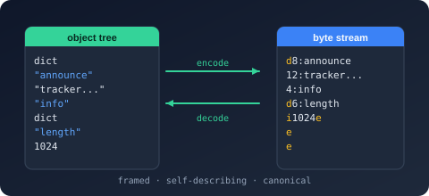

Bodu.Text.Bencode.Document Namespace
- Package
-
Bodu.Text.Bencode 1.3.0

Purpose
Bodu.Text.Bencode.Document is the read-only document object model of Bodu.Text.Bencode, shaped after System.Text.Json's JsonDocument / JsonElement. A parse produces a single disposable BencodeDocument that indexes the input bytes once; every BencodeElement is a lightweight struct cursor into that index. Prefer it over the mutable Bodu.Text.Bencode.Nodes tier when you only need to inspect a payload, and note that an object-typed member deserialized by the BencodeSerializer reads back as a BencodeElement.
Key types
- BencodeDocument - the disposable owner:
Parse(frombyte[]orReadOnlySpan<byte>),RootElement,WriteTo. - BencodeElement - the value cursor:
ValueKind,GetString/GetBytes/GetRawBytes/GetInt64/GetUInt64(+TryGet*),GetProperty/TryGetProperty, an integer indexer,GetArrayLength,EnumerateArray/EnumerateObject,Clone, andWriteTo. - BencodeElement.ArrayEnumerator / BencodeElement.ObjectEnumerator - the struct enumerators returned by
EnumerateArray/EnumerateObject. - BencodeProperty - a
Name/Valuepair yielded byEnumerateObject. - BencodeDocumentOptions -
MaxDepth,AllowUnsortedKeys,AllowDuplicateKeys.
Example
using Bodu.Text.Bencode.Document;
using BencodeDocument document = BencodeDocument.Parse("d6:lengthi1024e4:name10:ubuntu.isoe"u8);
BencodeElement root = document.RootElement;
long length = root.GetProperty("length").GetInt64();
foreach (BencodeProperty property in root.EnumerateObject())
Console.WriteLine($"{property.Name}: {property.Value.ValueKind}");
Notes
- Lifetime. Elements are only valid while their document is undisposed; call
Cloneto detach one. - Integers beyond
long. A value in theulongrange reads throughGetUInt64/TryGetUInt64. - See also: the Bodu.Text.Bencode introduction and the Using Bencode guide (Pattern 7 - Use a document model instead of a type).
Classes
- BencodeDocument
Provides a read-only, high-performance document object model over Bencode (BEP 3) bytes. The source is parsed once into a flat metadata index and exposed through lightweight BencodeElement struct views; no node tree is materialized.
Structs
- BencodeDocumentOptions
Defines the customizations applied when parsing a BencodeDocument.
- BencodeElement
Represents a single read-only value within a BencodeDocument. The element is a lightweight view - a pair of the owning document and a row index - so copying it is cheap and never materializes a node.
- BencodeElement.ArrayEnumerator
Enumerates the elements of an array BencodeElement in order.
- BencodeElement.ObjectEnumerator
Enumerates the key/value pairs of an object BencodeElement in stored order.
- BencodeProperty
Represents a single key/value pair within an object BencodeElement. Instances are produced by BencodeElement.ObjectEnumerator.